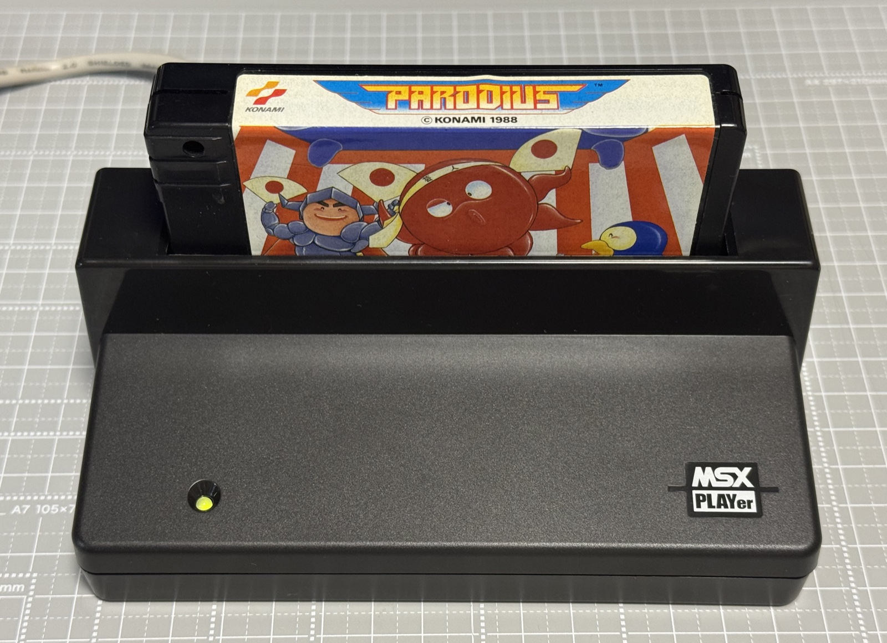

MSX Game Reader — Web Dumper
MSX Game Reader を使って、実カートリッジから ROM イメージをダンプします。
未接続
DB: 未ロード

STEP 1 デバイスを接続
🔌 Connect
Disconnect
Reset device
STEP 2 カートリッジを自動ダンプ
📀 自動マッパー判定 + ダンプ
最大スキャン:
64 KB
128 KB
256 KB
512 KB
1 MB
2 MB
（実 ROM が小さければ自動的に早期停止）
直近のダンプ結果
まだダンプしていません。
—
—
Mapper (detected)
—
Mapper (DB expected)
—
Size
—
Time / Speed
—
Trim
—
ROM Header
—
SHA-1
—
SHA-256
—
↓ Download
Show hex preview
このセッションのダンプ履歴
#
タイトル
マッパー
サイズ
DB
🛠 Advanced（個別テスト・プレーン dump・マッパー判定）
疎通テスト
GetSlotStatus
MemoryRead(0x0000, 64)
MemoryRead(0x4000, 64) — CS1
MemoryRead(0x8000, 64) — CS2
プレーン ROM 専用ダンプ（マッパー無しカートリッジのみ）
カートリッジ領域 (32KB: 0x4000–0xBFFF)
メモリ全域 (64KB)
チャンクサイズ:
16 KB
8 KB
4 KB
2 KB
1 KB
マッパー判定のみ実行
マッパー種別を判定（ダンプはしない）
📜 Log